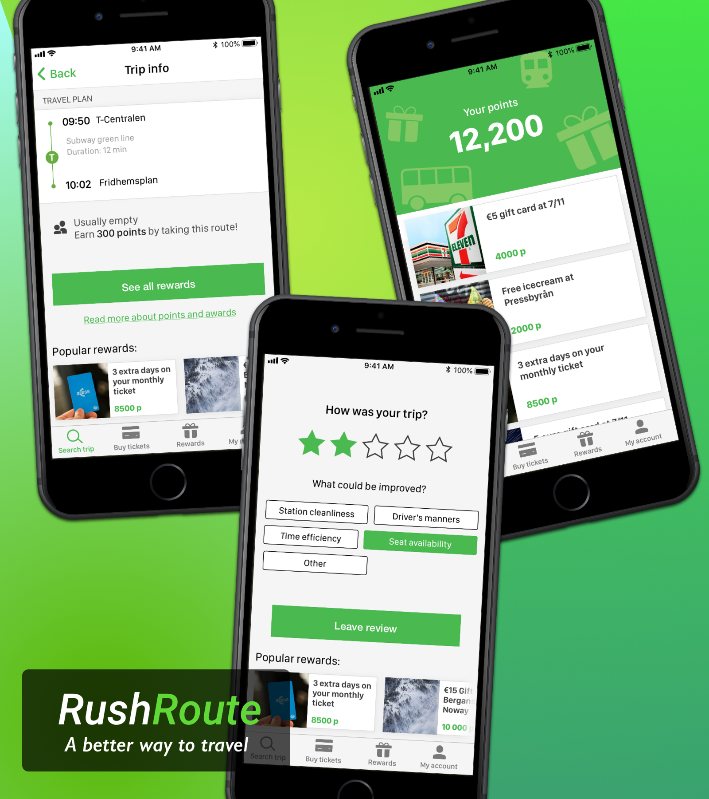
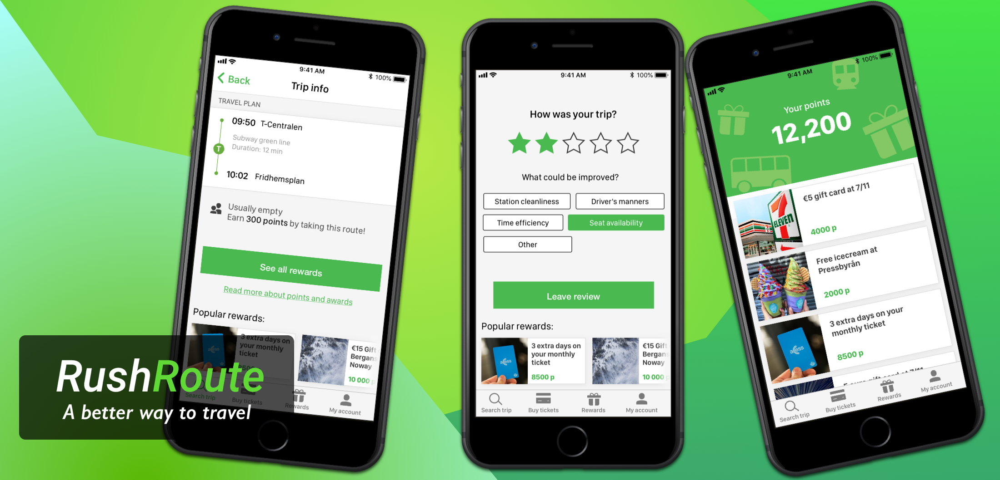
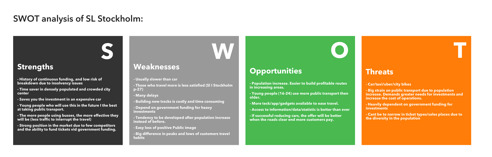
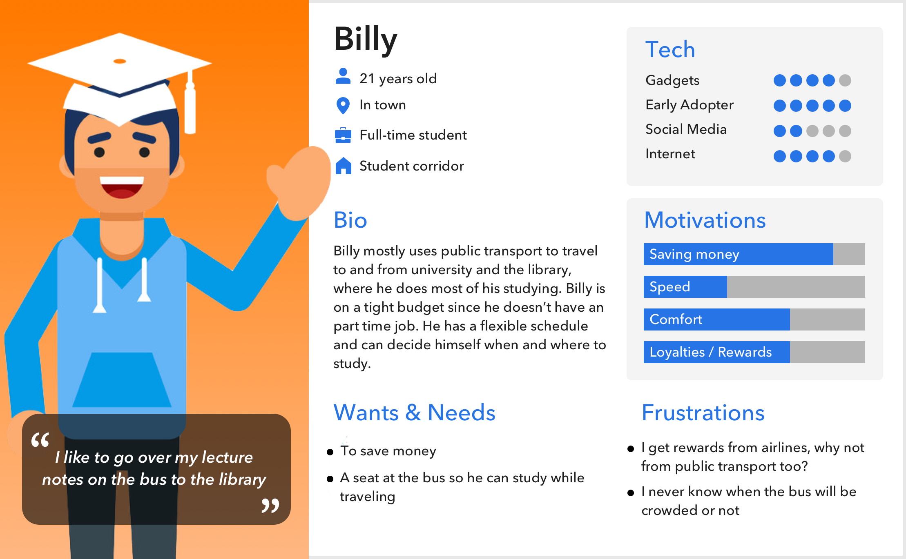
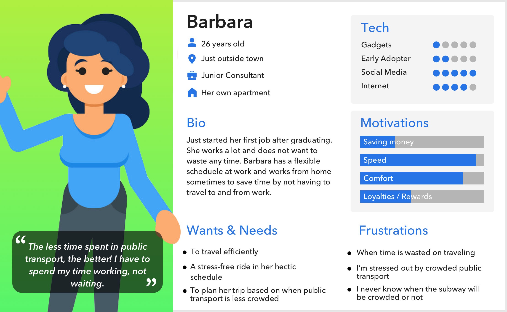
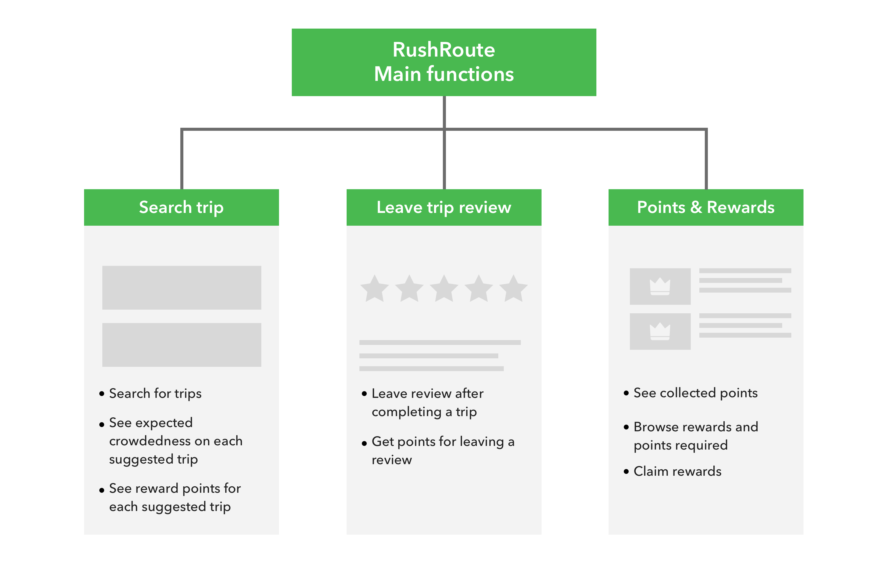
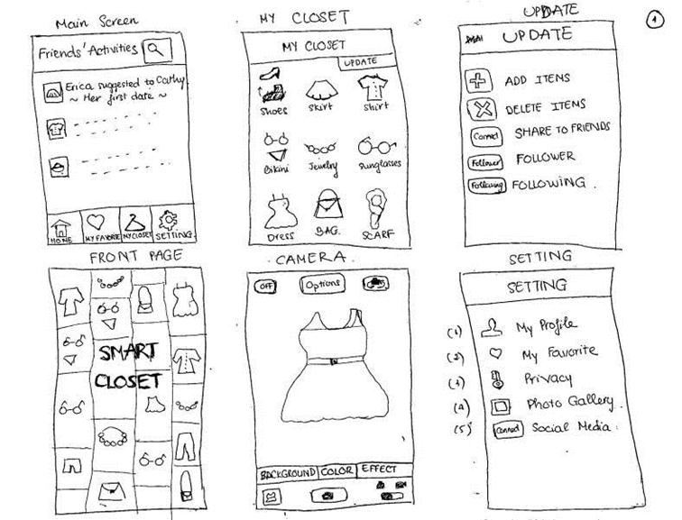
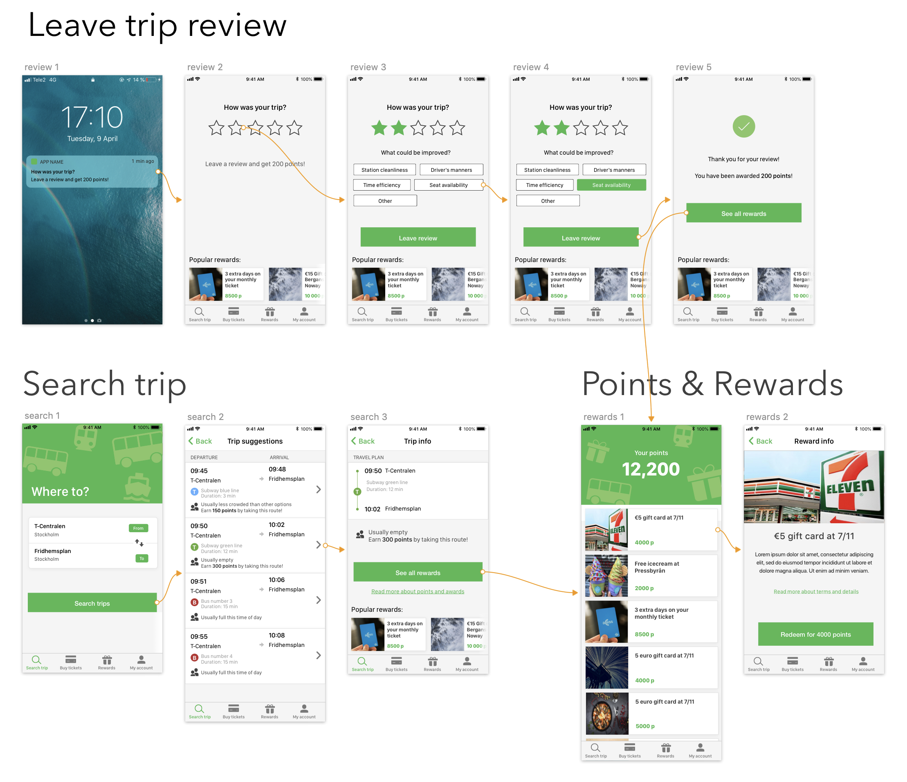

See my work ➜


RushRoute
Background
The aim of this case was to present a desirable, viable and feasible concept to SL (Stockholm Public Transport) on how we can make more people use public transport rather than driving cars, while also providing a value to all stakeholders. Since we had a timeline of 9 months, we had the possibility to allocate a lot ot time for research before starting to ideate. We followed a simple three step process for this project, divided into three separate stages.
Stage 1 - Research
Survey
To get a clear understanding of our end users before the ideation phase, we performed a survey concerning people’s travel habits. The results of this survey provided a solid foundation foundation moving into the other stages of the project. With 125 participants, we identified a few key findings that would help us during the project.
Pains, Gains & Jobs to be done
Based on the survey conducted earlier, we were able to determine the commuters main pains and gains when using public transport, to further break down the challenge in front of us from an end user point of view. This exercise also identified jobs to be done - which describes what a specific customer segment is trying to get done.
SWOT Analysis and Stakeholder Interview
We wanted to present a concept that was desirable, but also viable from a business- and technological point of view. A simple SWOT analysis was conducted to identify various possibilities and challenges with Stockholm Public transport today. And an interview was conducted with an upper manager working with Stockholm Public transport to make sure what data sources we could use and which technological limitations we had to take into consideration.
Opportunity Capture
I then conducted a workshop with the main goal of finding opportunities where we could add some value to our end users - the commuters. Based on all the previous research we had done, we concretized our ideas and put them in an opportunity capture cards, which summarizes the different ideas and the business value. We then chose to move on to the next stage with a few of the opportunities captured.

Stage 2 - Define solution
Personas
Based on the opportunity we decided to capture in the previous stage, we identified two main categories of users for our solution. We created a persona for each of of these categories of users, and these personas were to find and advocate solutions to problems while defining and validating the solution we decided to move forward with.


Scope functions
In order to provide a MVP (Minimum viable product) when presenting our concept. We scoped down the function to the bare essentials to showcase our idea in a way that’s simple and easy to grasp. Three main tasks were identified to be essential to our idea and these are the functions we decided to sketch and prototype during the next stage.
Stage 3 - Prototyping
Lo-fi prototype
To be able to quickly iterate the design, I decided to sketch upp some lo-fi prototypes just using pen and paper. These prototypes were made to outline the user flow and the navigation of the app. A few iterations were done and we settled on a simple bottom navigation and to provide clear CTA:s (Call to action) between the different tasks.

Hi-fi prototype
Since we were presenting our concept to various stakeholders with different areas of expertise, we decided to go ahead and also create a clickable, high fidelity prototype of our concept. I designed the prototype in Sketch and made it interactive by using InVision. By presenting a polished and interactive prototype, it was easier for us to get our idea across to stakeholders that maybe were not used to looking at wireframes.
Result
An incentive program which give end users personal rewards for traveling with public transportation outside rush hours, and by leaving a review after their trip. This program is accompanied by a mobile application which can be integrated in the travel planning app for the specific public transportation company. What this solution offers is a way for public transport companies to balance the strain on different transport modes during rush-hour, which leads to shorter lines and increased punctuality and reliability. On top of this, the data collected from the trip review feature can be used to further improve the public transport experience.
The final concept was presented in Oslo and was well received by various stakeholders within the company and stakeholders from public transport companies.